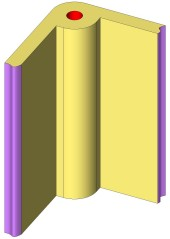

|
Vidalar
plastik parçalarýn montajlanmasýnda yaygýn olarak kullanýlýrlar.
Plastik ürün tasarýmcýlarýnýn, saðlýklý ve uzun ömürlü, vida
yuvasý (boss) tasarýmlarý yapabilmeleri için bilmeleri gereken
bazý kurallar vardýr.
Çoðu
zaman duvar kenarlarýnda düþünülen vida yuvalarýnýn, uygun
olmayan ölçülerde yapýlmasý sonucu çöküntülere sebep olarak,
nihai üründe görünümü etkilediði bir gerçektir.
Boss'larýn,
ürün üzerinde yaptýklarý çöküntü izlerini en aza indirmenin
yollarý aþaðýda açýklanmýþtýr.
|
Kötü
Bir Boss Tasarýmý
|
Daha
Ýyi Bir Boss Tasarýmý
|
|
|
 |
|
|
Þekil-1
Kötü
Boss Tasarýmý
Boss'un köþe ile birleþik yapýlmasý sonucu, et kalýnlýðýnýn
artmasý, bu bölgede çöküntü oluþmasýna sebep olur.
|
Þekil-2
Daha Ýyi Boss Tasarýmý
Duvarlarýn
birleþim yerleri uygun radyus ýle baðlanýp, iç kýsma
boss yerleþtirilebilir. Bu tasarým bir üsttekine göre
daha az çöküntü izi yapmaktadýr.
|
|
En
Ýyi Boss Tasarýmý
|
|
|
|
|
Þekil-3
En Ýyi Boss Tasarýmý
Boss
duvardan açýkta bir konumda yerleþtirilir ve duvara
uygun atkýlar ile birleþtirilir. Atký ve boss ölçü oranlarýna
uyulduðu taktirde, çöküntü izinin en aza indiði görülecektir.
T: Ürün Et Kalýnlýðý
t: Boss çevresindeki et kalýnlýðý
Nominal ürün et kalýnlýðý 3,5mm'den küçükse, vida yuvasý
etrafýndaki et kalýnlýðý yaklaþýk olarak, nominal ürün
et kalýnlýðýnýn %60-70'i kadar tasarlanabilir.
|
Boss'lar,
kalýplama ve kullaným esnasýnda saða sola yatmamalarý ve daha
rijit bir yapýya sahip olmalarý için, duvar kiriþ gibi bölgelere
bitiþik yapýlýrlar. Bu da istenmeyen kesit kalýnlýklarýna
yol açar. Þekil 4'te kalýn kesitlerden kaçýnmamýz gerektiði
gösterilmektedir. Plastik ürün tasarýmýnda mümkün olan en
homojen kesit daðýlýmý saðlamamýz gerekmektedir. Kalýn kesit
bölgeleri daha yavaþ soðuyacaðýndan, soðuma süresince çekmeler
ve büzülmeler, homojen kesit daðýlýmý gösteren bölgelere göre
daha fazla olacaktýr. Bu problemden kaçýnmak için, kesit kalýnlýklarý
her bölgede eþit hale getirilip, uygun atký (federler) kullanýlmalýdýr.
Atkýlarýn kesit kalýnlýðýna göre ölçüleri, federler tasarým
kurallarý dikkate alýnarak belirlenmelidir.
|
|
|
Þekil-4
Kötü Boss Tasarýmlarý ve Oluþan Çöküntü Ýzleri
Homojen olmayan et kalýnlýðý daðýlýmý sonrasý, saðdaki
þekilde mavi renkle gösterildiði gibi çöküntülerle
karþýlaþýlýr. Özellikle dýþ yüzeydeki çöküntüler,
estetik görüntüyü bozacaðýndan, ürünün pazardaki satýlabilirliðinide
azaltacak, rekabet þansýmýzý düþürecektir.
|
|
|
|
|
Þekil-5
Uygun Boss Tasarýmlarý
Boss
tasarýmýnda kalýn kesitlerden kaçýnýp, atký (feder)
kullanýnýz Boss'larýn þekildeki gibi tasarlanmasý, çöküntü
izlerini azaltacaðýndan, ürünümüzün satýlabilirliðini
artýracaktýr.
|
Þekil-6 Atkýlarla Güçlendirilmiþ Boss
Þekil
6'daki gibi bazý Boss'lar duvarlara bitiþik yapýlmayabilir.
Böyle durumlarda boss'un etrafýna en az 3 yada 4 adet atký
atarak, boss güçlendirilmelidir.
Þekil
7'de kör bir Boss'un ideal ölçüleri gösterilmektedir. Kalýplama
esnasýndaki büyük basýnçlar, boss'u oluþturan ve gereðinden
uzun boydaki çelik pimi kolaylýkla eðebilir. Bu sebeple kör
vida yuvalarýnýn boylarý, çaplarýnýn 2,5 katýndan fazla olmamalýdýr.
Ön yüzeyde çöküntüyü önlemek için, delik boyu, et kalýnlýðýnýn
0,7'ine kadar devam etmelidir. Her þeye raðmen ürün üzerinde
halka þeklinde bir çöküntü izi oluþacaktýr. Bu izi daha da
azaltmak için Þekil 8'deki tasarým kullanýlabilir.
|
|
|
|
Þekil-7
Kör Boss'lar Ýçin Ýdeal Ölçüler
|
|
|
|
|
Þekil-8
Kör Boss'lardaki Çöküntü Azaltma Önlemleri
|
5
numaralý þekilde patlak cývata yuvasý görülmektedir. Boss
ölçüleri kör boss ölçülerindeki gibi kullanýlabilir. Delik
boyu delik çapýnýn en fazla 5 katý olmalýdýr. Delik boyunun
daha da uzun olmasý istenen durumlarda, ön yüzeydeki çöküntü
izini Kabul etmek þartý ile, deliði çýkartan pimin ucu konik
olarak karþýya merkezlendirilmelidir.
Kör
civata deliði boyunu azaltmak için bir yöntem 10 numaralý
þekilde göterilmiþtir. Daha kolay kalýplamak için, patlak
cývata yuvalarýnýn boylarý, kör cývata yuvalarýnýn boylarýndan
uzun yapýlabilir.
|
|
|
|
Þekil-10
Kalýplama kolaylýðý açýsýndan, patlak cývata yuvalarýnýn
boylarý,
kör cývata yuvalarýnýn boylarýndan uzun yapýlmalýdýr.
Bu, karþýlaþýlabilecek problem riskini azaltýr
|
|
|
|
Not:
Bu raporu MS Word formatýnda indirmek için týklayýnýz
(2,5MB).
|